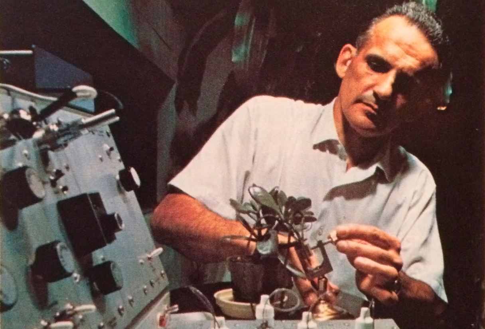

Índice
Cleve Backster e as plantas
Na década de 1940, Cleve Backster serviu no Corpo de Contra-Inteligência, onde certa vez hipnotizou uma secretária para vazar documentos para ele, apenas para provar um ponto. Em 1948 ingressou na CIA, onde foi um pioneiro da tecnologia do polígrafo, onde se envolveu em interrogatórios com pentotal sódico (soro da verdade) e Deus sabe o que mais.
Ele concebeu o que se tornou o padrão mundial para detecção de mentiras: Teste de Comparação de Zona de Backster.
Ele deixou a CIA para iniciar seu próprio negócio de polígrafo, que correu bem até que tudo mudou em 2 de fevereiro de 1966.
Sua secretária comprou uma planta, uma Dracaena, foi a primeira planta que ele teve.
Ele o conectou a um polígrafo e, para sua surpresa, estava nervoso e vivo, mudando com o tempo.
Depois de um minuto, mostrou um pico curto e significativo. Se um homem tivesse essa reação, ficaria angustiado.
Ele tentou mergulhar uma folha no café quente, mas nada aconteceu.Ele o cutucou.Nada ainda.Após 14 minutos, Cleve teve um pensamento espontâneo:Ele visualizou alguns fósforos, queimando a folha presa ao detector de mentiras.A planta teve uma reação enorme!Seu pensamento por si só foi suficiente para fazer uma diferença mensurável.
A partir desse momento, Cleve dedicou sua vida ao estudo desse fenômeno, chamado 'Percepção Primária' que ele mediu usando o 'Reflexo Psicogalvânico' (PGR). Ele estudou dezenas de tipos de plantas, incluindo alfaces, cebolas, laranjas e bananas; estirpes de bactérias; culturas de células humanas tais como sangue, sêmen e leucócitos; animais como gatos e camarões.
Vou resumir algumas de suas descobertas...
As plantas estão sempre cientes do que está acontecendo ao seu redor. Isso não está enraizado no eletromagnetismo - as gaiolas de Faraday não vão parar esse fenômeno, é não-local, então você pode estar do outro lado do mundo e ainda afetar outra forma de vida com seus pensamentos.
As plantas se sintonizam com qualquer coisa que esteja viva ao seu redor, até mesmo bactérias. Os humanos comandam instantaneamente a atenção de qualquer planta sempre que nos aproximamos. Elas não se importam com bactérias quando há um humano por perto.
O fator decisivo é a proximidade emocional e assim como você pode ficar perto de familiares e amigos à distância pensando um no outro, você pode manter uma relação com uma planta.
Tudo o que mencionei não é verdade apenas para as plantas, também é verdade para os animais e os seres humanos. Seus animais de estimação estão sintonizados com suas ondas cerebrais, assim como seus amigos e familiares. Laços emocionais, como coloquialmente chamamos.
O que acontece quando há muitos humanos em um só lugar? Como todos copiam as ondas cerebrais uns dos outros, é uma pergunta intrigante. A resposta é que aquele com as ondas cerebrais mais coerentes será espelhado por todos nas proximidades.
Se você tirar algumas células vivas do seu corpo, elas vão espelhar o que está acontecendo com você, mesmo que você esteja a milhares de quilômetros de distância. Eles ignorarão os estímulos de outros humanos porque estão conectados a você, mesmo que as células (amostra de sangue, etc.) estejam localizadas a centenas de quilômetros de distância de você.
Aqui está uma pequena lista de estímulos humanos que demonstraram induzir uma reação de uma amostra remota [1] de leucócitos orais e espermatozóides:
» Inalação de fumos de nitrito de amila
» Pensamentos de Automutilação
» Vendo Fotos Eróticas
» Situações Familiares Carregadas Emocionalmente
» Morte de outras células
» Assistir a filmagens de guerra
» FúriaCuriosamente, as experiências negativas provocam respostas mais fortes do que as positivas[2] e acho que todos podemos nos relacionar com essa verdade experimental em nossas próprias experiências de vida.
Um experimento mostrou que uma planta que testemunhou o assassinato de outra planta poderia identificar o assassino de uma fila de seis suspeitos! Em outras palavras, a planta mostrou que tinha memória emocional.
Quando um cortador de grama profissional entrou em uma sala com uma planta ligada a um eletrodo, registrou uma reação muito forte.
Outro experimento mostrou como as plantas ficavam angustiadas quando ele quebrava um ovo e quando jogava camarão vivo em água fervente, enquanto o placebo não registrava resposta.
É difícil isolar se a planta está sentindo empatia do camarão ou do ovo, ou copiando a empatia do pesquisador quando ele realizou o experimento, um pouco irônico, já que a empatia é, por definição, o espelhamento das emoções.
Não saberemos com certeza até que tenhamos concluído os experimentos para ver se os sacrifícios com placebo produziriam respostas iguais das plantas, se um pesquisador matasse uma cultura de bactérias placebo que na verdade não existiam.
Marcel Vogel é um nome que você faria bem em lembrar, um pesquisador genial. Ele leu em uma revista sobre os experimentos de Cleve Backster e conseguiu replicá-los. Ele obteve uma resposta psicogalvânica de suas plantas quando induziu estímulos em si mesmo, a princípio quando estava ao lado das plantas, e gradualmente aumentou a distância para mais de 8.000 milhas sem diminuir o tamanho do efeito [3]
Mais importante do que replicar e verificar a veracidade dos resultados de Cleve, o olhar aguçado de Marcel percebeu algo.
Sua respiração estava inextricavelmente ligada à transferência de seus pensamentos para a planta!
Quando ele prendeu a respiração, não houve reação, mas com a respiração adequada o efeito poderia ser amplificado. Ele continuou a estudar esse fenômeno de manifestação mediada pela respiração e descobriu que isso também se aplicava aos cristais.
O método mais eficaz de respiração era a exalação intensa pelas narinas enquanto se concentrava em sua intenção.
Marcel também descobriu que se você não prestasse atenção a um ato flagrante cometido em uma planta, eles não registravam uma resposta. As plantas sentem o que você sente; o que você espera que eles sintam, as emoções que você atribui a eles. A planta, animal, cristal ou corpo de água absorve essas emoções quando você expira, não importa onde você esteja, desde que esteja conectado emocionalmente.
Ele foi capaz de prever quando um físico parou de trabalhar em uma tarefa mental complicada com base na resposta psicogalvânica das plantas sincronizadas com o físico. As plantas reagiram fortemente aos estímulos eróticos falados.
Existem muitos obstáculos para estudar academicamente a percepção das plantas. O maior desafio é que você fica fraco ou sem resultados se 'forçar' a si mesmo a pensar um pensamento em vez de ele aparecer espontaneamente em sua cabeça. Então, se você deixar um eletrodo em você e seguir seu dia, e registrar tudo de notável que acontece com você, ele deve se correlacionar com os gráficos do polígrafo de suas plantas e animais de estimação.
Outro obstáculo é que uma conexão emocional entre os seres vivos é necessária para que isso funcione, e não preciso explicar por que isso é algo que pode facilmente dar errado quando você contrata pessoas por dinheiro para concluir um experimento para você. Eles realmente se importam com as plantas da mesma maneira que alguém que espontaneamente procura e cuida de plantas ou animais de estimação ao longo de meses e anos?
Todos esses obstáculos podem ser superados, é claro. Mas exige extrema heterodoxia dos pesquisadores, algo para o qual a ciência acadêmica não é adequada, o viés na direção oposta pode ser facilmente visto, eles com certeza adoram "desmascarar" coisas assim. Existem replicações positivas e negativas disso, e os resultados negativos não podem explicar os positivos.
Dr. Hal Puthoff é certamente um nome com o qual você está familiarizado, como diretor do infame Projeto Stargate da CIA. Ele foi capaz de reproduzir uma correlação significativa entre humanos e plantas[4]
A replicação positiva mais significativa foi um estudo russo onde eles realmente usaram medidores de EEG, que falharam no início, assim como na segunda tentativa de Mythbusters, mas os pesquisadores eram parapsicólogos veteranos, bem versados em hipnose, e postularam que as medições de EEG poderiam funcionar se eles hipnose induzida para aliviar a falta de naturalidade de participar de um estudo científico. Eles selecionaram 24 indivíduos com idades entre 18 e 24 anos, escolhidos por sua alta suscetibilidade à hipnose. Cada sujeito participou entre dez e dezenas de ensaios, um total de 300 ensaios foram executados e a replicação foi muito bem sucedida ao ponto em que as plantas mostravam um espelho perfeito de todas as mudanças de humor induzidas no sujeito de teste, enquanto as plantas de controle mostravam resposta zero[5]
Como nota de rodapé, há uma ecologista australiana chamada Monica Gagliano que experimentou plantas sensíveis que fecham suas folhas quando tocadas, ela demonstrou que as plantas eram capazes de aprender e que se lembrariam de seu comportamento alterado 28 dias depois, enquanto os insetos que ela submeteu para testes semelhantes esqueceram o que aprenderam depois de míseras 48 horas. Gostaria de lembrá-lo que as plantas não têm neurônios ou cérebro, mas ainda podem aprender.
Consciência
A visão comumente aceita é que todo o nosso sistema trabalha em uníssono para alcançar a consciência. Corte sua cabeça e "a máquina é interrompida", sua consciência instantaneamente deixa de existir.
Hoje falamos sobre como a vida unicelular, como as bactérias, parece experimentar a consciência, uma vez que é afetada por pensamentos e estímulos emocionais. Esta é uma forte afirmação contra a ideia de que sua consciência surge de uma inteireza.
É hora de brincar com o pensamento de que a consciência acontece em um nível baixo, talvez até subatômico.
Seu corpo consiste em ~ 40 trilhões de células humanas e ~ 100 trilhões de células de bactérias. Os últimos são muito menores, portanto, representam apenas uma pequena fração do seu peso corporal. A maioria das bactérias está em seu intestino e ajuda a quebrar os alimentos, produzindo neurotransmissores e é a base do seu sistema imunológico.
Está claro pelos experimentos com bactérias que temos uma forte sincronia entre as bactérias e as próprias células do nosso corpo. As bactérias podem não compartilhar nosso DNA, mas compartilham nossos sentimentos. Quando nos sentimos bem, eles prosperam, estamos no mesmo barco. Muito parecido com você e as pessoas que você ama! Você tem um DNA diferente, mas isso não importa, porque você está compartilhando sua jornada na vida, suas experiências e sentimentos são coletivos.
Considere que a proximidade percebida é suficiente para alcançar esse tipo de vínculo emocional. Agora, eu quero que você imagine uma floresta. Você pode ver como todas as formas de vida compartilham emoções, percepções e trabalham juntas simbioticamente, em vez da feroz luta niilista pela sobrevivência individual que aprendemos nas escolas? A natureza é colaborativa e simbiótica, um belo lugar de amizade e amor, e quando o leão come a gazela, as células da gazela serão incorporadas ao leão, o que realmente não é muito diferente do que acontece em seu corpo: mais de 1 milhão de células do corpo morrem a cada segundo. Eles são reagrupados em novas células, à medida que o ciclo natural da vida continua.
Essas células morrendo são uma tragédia? Não.
O mesmo vale para a gazela comida pelo leão. Estamos todos juntos neste mundo, nossos ancestrais sabiam disso. Um dia o mundo vai engolir você, e não há razão para lamentar esse reenlace.
Amor
Marcel Vogel, que mencionei anteriormente ter replicado os experimentos de Cleve Backster, postulou que todos esses efeitos são mediados pelo Amor, que é muito mais do que apenas uma emoção humana, e parece que ele estava certo, porque você realmente forma os laços emocionais mais fortes através amor, todo ser humano com coração sabe disso. Pode ser uma peculiaridade humana, mas visto que é verdade para interações humano-animal, humano-planta, humano-cristal e humano-água, é difícil argumentar que é um "hack mental" em vez de um aspecto real de como a natureza e o universo opera. Enquanto outros cientistas e leigos falam sobre o efeito placebo ser mediado por observações frias e objetivas, expectativas e pressuposições, Marcel disse que era um aspecto menor do todo maior, referindo-se ao Amor como a lei de coerência da natureza.